我们提出 Mobius-v0，这一架构由存储知识向量的全局共享记忆（FFN）和多个通过迭代实现组合推理的推理器（Self-Attn）组成。推理器使用隐藏状态作为缓存和载体，反复查询记忆以获取所需的知识向量，同时将知识传回推理算子。通过这种知识与推理分离的架构，Mobius 实现了更好的知识压缩和推理效率。基于 Mobius-v0 架构：（1）我们从零训练的 7B 模型，仅使用 7B Transformer 基线 62.6% 的训练数据，就取得了相近的下游得分。（2）我们从 Qwen3.5-35B 持续预训练得到的 Intern-S2-Mobius，在取得相近下游得分的同时，实现了接近 4 倍的端到端推理加速。
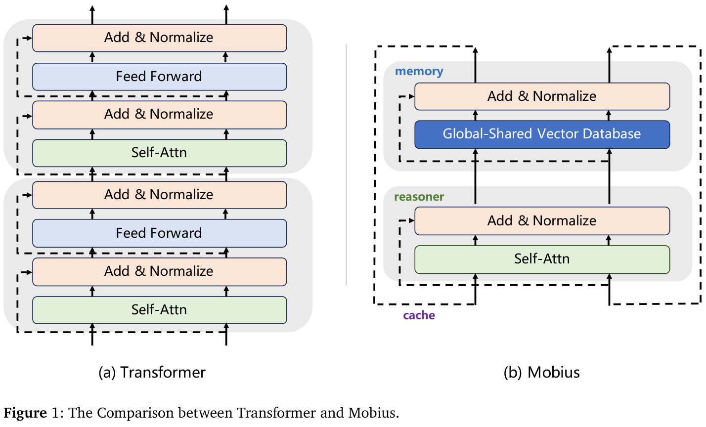
Transformer [69] 是迄今最普遍、最强大的架构范式，几乎渗透了所有领域，从语言和视觉，到视频和科学计算 [4, 15, 16, 81]。在其演进过程中，形成了两个关键研究方向。第一个方向保持模型架构不变，通过增加其他方面的投入来提升能力：扩大模型参数规模、扩充训练语料、延长推理链，通常能赋予模型更丰富的知识，以及应对更复杂问题的能力 [33, 37, 45, 71]。第二个方向通过降低架构复杂度，减少训练和推理开销，以提高实用性：由于人们普遍认为 self-attention 的二次复杂度构成了超长上下文的瓶颈，（接下页）
（接上页）人们提出了 SSM 和 GDN 等线性 attention 机制 [10, 25, 38, 78]，此后其变体已被集成到当代主流架构中。
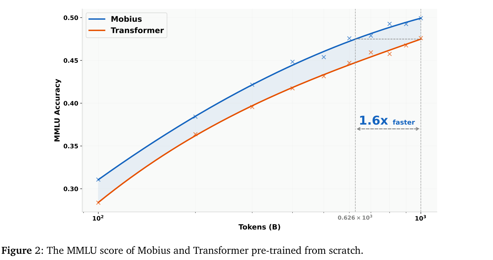
然而，这两条路线如今都触及了各自的极限。一方面，扩大数据和参数规模以很高的投入回报率带来了越来越强大的模型，但 scaling law 已逐渐进入平台期，并接近边际收益递减阶段 [33, 37]。长 chain-of-thought 在数学、代码和物理等领域发挥了良好作用，但模型往往不论问题难易都输出冗长、偏题的内容；在人类社会中，这种特征通常被视为智能不足的表现 [49, 54]。另一方面，降低 full attention 的计算复杂度确实带来了一定效率收益，但越来越明显的是，以牺牲相当一部分模型能力为代价获得的效率提升，并没有使模型真正达到商业部署所需的可负担程度 [3]。
面对 AI 发展的这一瓶颈，我们探索另一条路线：增加架构复杂度以提高模型智能的上限，从而减少端到端开销。为此，我们提出 Mobius，解除知识向量（FFN）与推理算子（Self-Attn）之间的绑定，构建一个所有推理算子均可访问的共享知识向量数据库。尽管这一共享向量数据库规模庞大，使每次推理的激活高度稀疏，带来了更大的内存访问压力和更低的单次前向效率，但我们发现，在维持相当推理准确率的同时，该实现相较于参数量相同的 Transformer 架构实现了接近 4 倍的端到端推理加速。
Mobius 的推理效率收益主要来自两方面：推理时更灵活的激活路径，以及更动态的潜在空间迭代；二者共同赋予 Mobius 更高效、更简洁的输出模式。第一个优势源于：与 Transformer 中分层存储和前向残差连接的组合不同，Mobius 的共享存储原生引入了反向残差连接。这一机制意味着，浅层隐藏状态不仅可以访问深层知识，深层隐藏状态也可以访问浅层知识；这增强了不同层之间的组合泛化，从而加速关键信息的综合。第二个优势源于 Mobius 原生引入的动态潜在推理：Transformer 以 token 作为信息传递媒介，完成单个 token 的推理需要遍历所有层；而 Mobius 仅用少数几层，就能针对完整知识库迭代并细化潜在表示，无须像传统潜在推理那样多次遍历全部层。这些潜在表示并不与任何特定 token 紧密绑定，只有在更深的层中才同步解码多个 token。这种方式既提高了信息传递密度，也为不同 token 动态分配不同的计算开销。最终，Mobius 用显著更少的高质量（接下页）
（接上页）token 完成相同推理任务，获得显著高于 Transformer 的端到端推理效率。
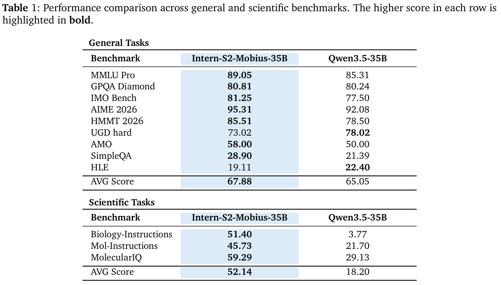
在基于 Transformer 的架构中，前馈网络通常被认为负责知识存储 [20, 52]，隐藏状态负责信息传递，self-attention 负责组合推理 [17, 69]。
与此同时，由于 Transformer 的分层结构，每一层的 self-attention 主要处理来自前一层的知识输入，并促使当前层的 FFN 产生下一层所需的输出。虽然残差连接在各层之间建立了更灵活的连接 [31, 34, 67]，但只有浅层隐藏状态可以访问深层知识，而深层 self-attention 只能处理来自浅层的知识；模型仍然无法实现反方向的信息传递。
为了构建反方向的信息传递，当前模型主要依赖 chain-of-thought [26, 71]。每次前向传播后，模型生成一个新 token，用于在下一推理步骤中激活知识。通过迭代生成 token，模型不断从 FFN 中提取有价值的知识，直到这些知识足以产生关键 token，乃至最终答案。
仅依靠分层结构、前向残差连接，以及以 token 为媒介的 chain-of-thought 来共同构建人工智能模型，是低效的。为了让模型具备回答复杂问题所需的充分知识，大量计算被消耗在生成冗长、冗余的推理链上。为缓解这一问题，我们重新设计了模型架构，并提出 Mobius。
残差连接已成为现代深度学习模型中最关键的组件之一 [31]。它们看似不起眼，却承担着在前向传播中传递层间信息，以及在反向传播中稳定 gradient 大小的重要职责。[32, 75] 尽管此后出现了 Hyper-Connection、Attention-Residual 等多种残差连接变体 [39, 74, 80]，迄今所有主流残差连接仍保持单向性。例如，在前向传播过程中，（接下页）
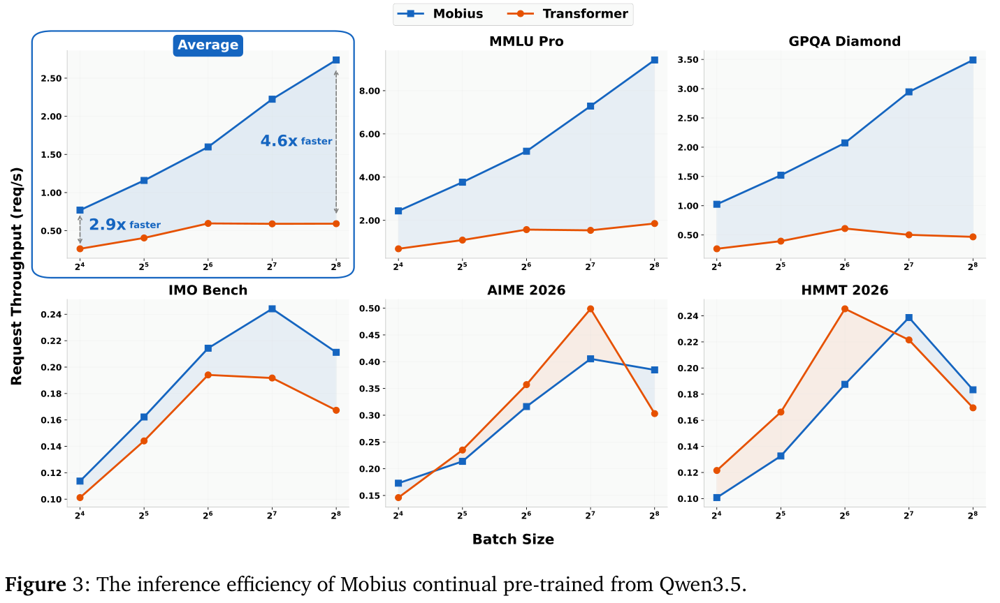
（接上页）残差连接只将浅层信息传递给更深的层。[34] 这种单向性带来了显著弊端：如果某些关键知识在浅层计算中未能被激活，模型就可能难以在该轮推理中解码出有价值的 token，只能借助 chain-of-thought 生成信息量较低的 token，以进入下一推理步骤。
为缓解这一现象，有必要使残差连接具备双向性，也就是让深层在前向传播中访问浅层知识。然而，直接实现这种反向残差连接并不利于基础设施，因为它可能引入更复杂的计算图，以及更难并行化的异步过程。为此，我们选择间接实现反向残差连接：不同层共享一个超大的知识库，让每一层都有机会访问模型内的全部知识。最终，实证结果证实，这种形式的反向残差连接对改善模型的端到端推理效率具有实质贡献。
长 chain-of-thought（Long CoT）已成为大语言模型推理中不可或缺的组成部分 [26, 45, 71]。借助这项技术，当代大语言模型如今能够解决广泛的复杂推理问题，涵盖数学、物理和代码生成。然而，Long CoT 的成本非常高昂。一方面，更长的推理链意味着生成更多 token，而生成成本随链长呈非线性增长。另一方面，当前模型在解决复杂问题时，经常采用“试错再纠正”的方式，在长时间推理中产生大量 token 冗余。此外，这类模型甚至在回答简单问题时，也倾向于给出过度冗长的回复。这种冗长一部分源于上述残差连接，另一部分源于当前推理的最小单位是 token，一种离散、信息密度较低的存储形式 [9]。
Mobius 将思考、试错和细化等过程内化为对连续向量的优化，并使模型能够为不同 token 动态分配计算预算。这让模型有机会减少多余 token，同时实现更高效、更智能的推理。Mobius 可以视为 Looped Transformer 与（接下页）
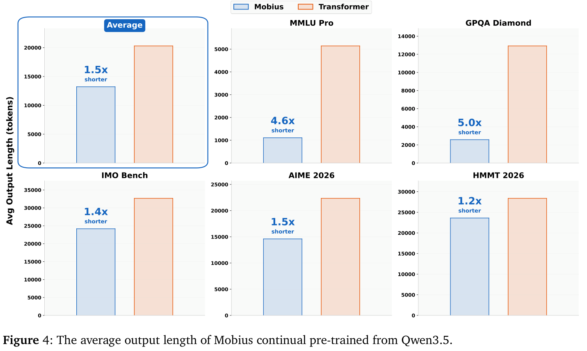
（接上页）Diffusion Language Model 的升级融合 [21, 43, 55]，采用更高效的潜在推理和并行预测。首先，Mobius 的循环频率更高，只用极少的层就能完成一次表示迭代。其次，在推理过程中，Mobius 通过更紧凑、信息密度更高的连续向量，同时获取多个 token 的联合表示。一方面，这减轻了多个隐藏状态并行化的压力，降低了循环过程中 KV cache 管理的复杂度，并增强了向量迭代过程的连续可微性。同时，这种原生潜在推理赋予模型更动态、更不受束缚的迭代过程，无须限制模型在特定迭代步骤解码固定数量的 token。
总体而言，Mobius 通过解除知识存储模块 FFN 与各层的绑定，构建全局共享知识向量数据库，从而获得这两项天赋。首先，这让所有推理算子，即 self-attention，都拥有对全部知识的读取权限。进一步地，self-attention 得以在显著更少的层内访问全部知识，并通过隐藏状态中的循环潜在推理，进行自适应的多轮迭代，最终一次性输出经过细化、信息密度较高的 token。
构建共享知识库时，我们选择了直接的横向拼接，因为 FFN 通常被视为键值知识向量池，而这种拼接方式保留了这些知识向量之间的对应关系。虽然简单拼接带来了性能收益，但过多的参数激活会降低模型训练和推理效率。因此，在更大的参数规模下，我们采用类似 MoE [63] 的分块技术来划分 FFN，并在前向传播中进行稀疏激活。
为验证 Mobius 的性能，我们开展了从零训练（TFS）和持续预训练（CPT）两类实验。在 TFS 实验中，我们使用 1TB token 分别训练了一个 Mobius 和一个 Transformer 的 7B-A1B MoE 模型，并比较了它们的 MMLU 得分。在 CPT 实验中，我们（接下页）
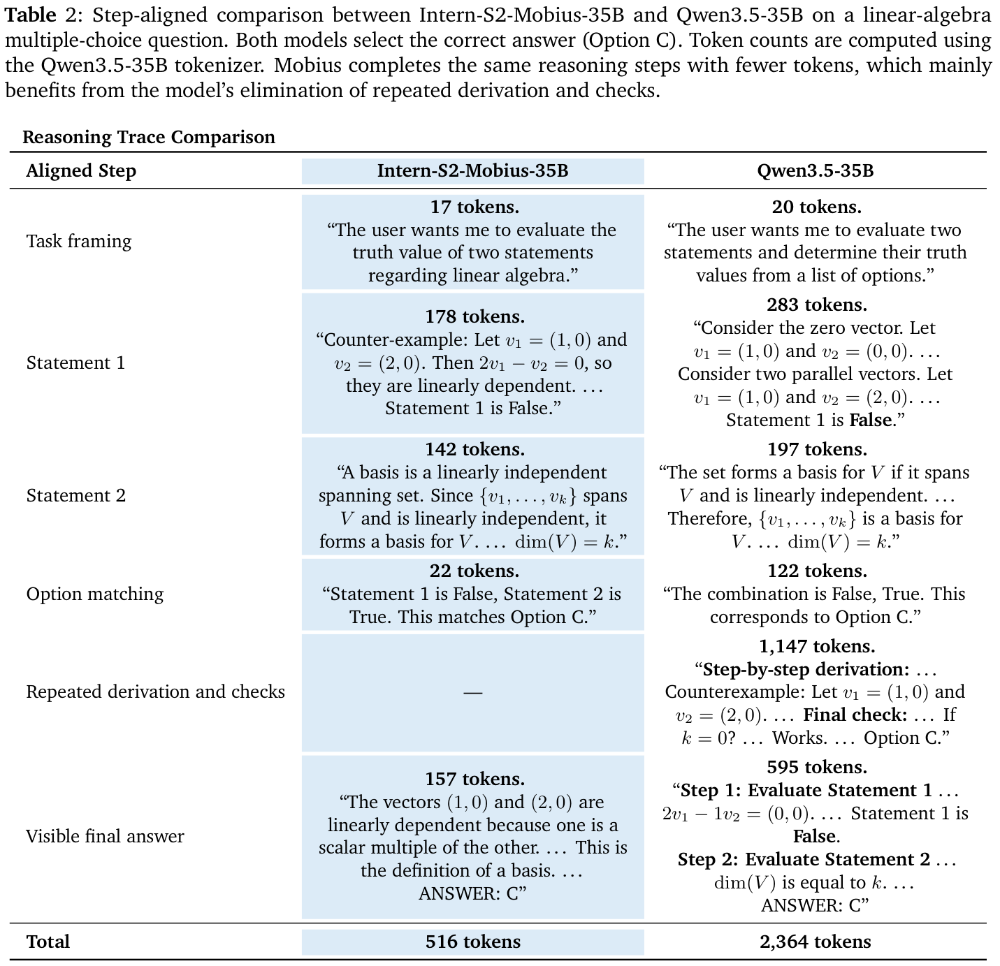
（接上页）以 Qwen3.5-35B-A3B 为起始 checkpoint，在 1TB token 上持续预训练，随后进行监督微调（SFT）和强化学习（RL）。
如图 2 所示，在训练的所有阶段，Mobius 的 MMLU 得分都显著高于 Transformer。此外，以 Transformer 在 1TB token 时的得分为基线，Mobius 仅用 0.626 倍的数据就能达到相同得分；也就是说，Mobius 的数据效率是 Transformer 的 1.6 倍。
Mobius 获得更高数据效率的机制仍有待充分探索。不过，我们推测，在 Transformer 架构下，各层参数存在相当大的冗余，例如同一份知识可能重复存储在多个层中。切换到知识与推理解耦的 Mobius 架构后，模型可以达到更高的压缩率，从而用显著更少的训练数据获得充分知识。
鉴于从零预训练的成本过高，为验证 Mobius 在更大规模下的能力，我们选择从已有的开源基础模型继续训练。如表 1 所示，从 Qwen3.5 出发，切换为 Mobius 架构并持续预训练，不仅保留了模型整体能力，而且实际上有所提升。
更值得关注的是，切换到 Mobius 不仅保留了基本推理能力，也改善了端到端推理效率。如图 3 所示，在多个评测基准上汇总后，Mobius 的请求吞吐量显著高于 Transformer。我们还考察了两个模型的推理长度，并在图 4 中可视化；结果表明，Mobius 端到端推理效率的提升主要来自更短的 CoT 长度。面对相同问题，Mobius 用显著更短的推理链解决问题，而 Transformer 需要更长的 CoT 来进行思考。
尽管 Mobius 的 CoT 推理更短这一现象的确切机制尚未完全确定，我们推测，这可能归因于 Mobius 原生的潜在推理特性：它将思考过程内化到模型内部，通过连续可微的优化实现更高效的推理。
然而，Mobius 是仅仅找到了问题的捷径，还是真正提供了更高效的推理方式，仍有待判断。通过比较多个案例，我们发现，Mobius 中缩短的 CoT 源于后者。表 2 的案例来自 MMLU-Pro 数学，考查两个基本的线性代数命题。第一个命题为假，因为 \(\mathbb{R}^{2}\) 中的两个向量不一定线性无关。第二个命题为真，因为张成 \(V\) 的线性无关集合是 \(V\) 的一组基，因此其 \(k\) 个向量意味着 \(\dim(V)=k\)。所以正确答案是选项 C：假，真。
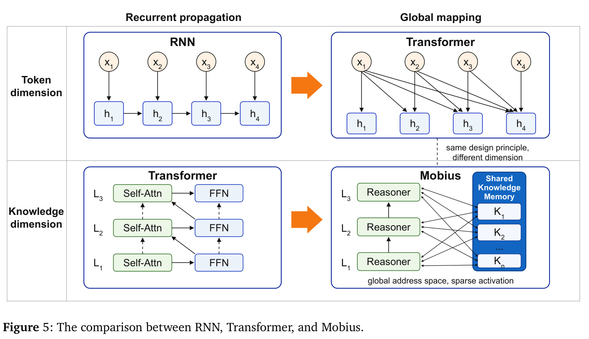
Chain-of-thought（CoT）将推理外化为中间 token [71]，但会产生顺序 decoding 开销。潜在推理则在连续状态中进行计算，探索三个方向：（接下页）
（接上页）连续思维、循环计算与并行细化。
连续思维方法使用在推理步骤间传递的可微表示，替代离散推理 token。COCONUT 直接将最终隐藏状态反馈为下一个输入 embedding，使中间计算无须将每个状态解码为语言即可继续 [30]。CODI 通过自蒸馏将显式 CoT 监督压缩为连续状态 [64]；SoftCoT 则利用轻量级助手生成针对具体实例的软思维，并将其投影到目标语言模型的表示空间 [76]。这些方法表明，在缩短乃至消除显式推理说明的同时，连续状态能够保留有用的推理信息。
这些方法提供少量潜在状态，后续 token 可以通过 attention 访问它们，并将其复用为共享上下文。Mobius 进一步将这种模式变成原生架构能力：其循环状态针对共享记忆不断细化，并共同支持多个未来 token，从而无须冗长轨迹就能进行信息密度更高的推理。
循环语言模型通过反复应用共享计算块来增加有效深度。Universal Transformers 引入了跨深度的循环细化与参数共享 [12]，后续分析则确立了 Looped Transformers 的计算表达能力 [21]。更近期的工作将有效深度直接与推理联系起来：循环模型能够模拟多步潜在计算，在推理任务上接近深得多的非循环模型 [60]；循环深度预训练则通过增加潜在迭代次数，而不生成额外推理 token，实现 test-time compute scaling [19]。
Mobius 同样通过潜在循环扩展计算，但每次更新只经过少数几层，同时仍能访问完整的共享记忆。这种更高的更新频率支持更多迭代细化，并将推理集中到信息密度更高的潜在状态中。
另一类工作通过在生成前引入额外潜在计算步骤来增强推理能力。Pause-token 方法加入学习得到的占位符，延后预测并创造额外计算空间 [24]。Hidden Decoding 在单次前向传播中将每个 token 扩展为多条潜在流，利用中间键值状态作为可复用计算轨迹 [46]。扩散语言模型通过对连续表示或掩码表示迭代细化，实现类似效果 [43, 55]。这些方法将计算从显式 CoT 轨迹转移到潜在轨迹。
Mobius 通过循环潜在细化扩展了这一思路，无须显式占位符或扩散步骤。其推理器反复从共享知识向量记忆中检索，细化高密度潜在状态，并行解码多个 token。
历史上，语言模型推理的主要范式是由单个强模型自回归地生成单个 token，并辅以长 chain-of-thought。为了提高端到端推理效率，两种方法越来越受到关注：增强推理并行性的 speculative decoding，以及缩短推理链顺序长度的简洁 CoT。
Speculative decoding 使用低成本草稿器提出未来 token 块或 token 树，再由目标模型并行验证这些候选，以加速自回归生成 [8, 42, 53, 68]。通过拒绝采样校正，这种验证保留了目标模型的输出分布。经典方法使用轻量级外部草稿模型，后续工作则基于辅助 decoding 头或预测的隐藏特征构建内部草稿器 [2, 7, 44]。MTP 是这类内部草稿机制，而不是（接下页）
（接上页）decoding 协议本身：共享目标模型主干的辅助头预测多个未来 token [22, 47, 51]。
无论采用草稿模型还是其他策略，speculative decoding 都只在预测 token 前遍历全部知识一次。相比之下，Mobius 在内部进行多轮知识遍历和多 token 迭代，在最终 decoding 前产生信息密度更高的隐藏状态，并原生支持多 token 预测。
长 chain-of-thought（CoT）推理能够提升高难度任务的性能，但其自回归生成会产生大量推理成本和延迟。因此，近期工作通过几类互补方法追求简洁 CoT：监督方法从剪枝后的轨迹或配对的长短轨迹中学习，或将显式推理说明内化为隐式或稠密表示 [9, 13, 14, 36, 73, 79]；基于 RL 的方法则通过奖励设计塑造推理长度，包括可控压缩和考虑长度的目标 [11, 18, 50, 65]。虽然 RL 可以激发自我纠正、验证和回溯等高级行为 [26, 62]，但只关注结果的奖励往往偏向更长的轨迹，因为额外 token 支持进一步探索和纠错 [77]。因此，核心挑战在于减少 CoT 的冗长程度，同时不消除准确、稳健推理所需的思考。
常规长度正则化可能通过削减思考来缩短 CoT，从而损害准确率和稳健性。相比之下，Mobius 通过几轮潜在思维迭代，给出经过更充分细化且更短的回复。
Mobius 将知识存储与推理计算解耦，重新设计了 Transformer 架构的内部信息流。本节讨论它与两大架构研究方向的关系：attention 机制和残差连接。
Self-attention 是 Transformer 架构的核心组件，通过 token 间的两两交互，使模型能够捕获全局依赖 [69]。然而，full attention 的二次复杂度已成为将 Transformer 模型扩展到长上下文场景的主要瓶颈。为解决这一问题，大量研究探索了更高效的 attention 机制。稀疏 attention 通过限制 attention 模式减少不必要的 token 交互，而线性 attention 通过替代性的核化或因子分解策略，重新表述 attention 计算以降低复杂度。更近期，状态空间模型及其门控变体，如 Mamba 和 Gated Delta Networks，以循环状态更新替代显式 attention 计算，为长序列建模提供高效替代方案 [25, 78]。这些方法主要通过修改计算形式或降低信息交互成本来提升效率。
我们并不直接降低 attention 复杂度，而是旨在提高每次 attention 操作提取的信息密度和价值。具体而言，Mobius 通过解耦知识与推理，并构建全局共享知识库，承担更高的检索成本，却为 attention 提供更灵活的选择空间和更高质量的输入，从而以更紧凑的计算轨迹完成推理。
残差连接是扩展深度神经网络的基础组件，通过捷径通路支持稳定优化和有效信息传播 [31]。后续研究探索了更灵活的连接模式，以改善跨层信息传递。Highway Networks 引入可学习门控，自适应控制信息流 [66]；DenseNet 则允许各层直接访问先前表示，以增加连接密度 [35]。更近期，Hyper-Connections 和 Attention Residuals 进一步研究如何通过增加连接容量，或动态聚合先前层的表示，增强残差通路 [39, 80]。尽管有这些改进，已有残差（接下页）
（接上页）增强方法主要关注加强前向信息传播，即信息从较早层流向较晚层。
Mobius 将残差设计从前向信息传播拓展为双向知识访问，而不显式扩展残差通路。由于所有推理阶段都能访问同一个知识库，深层推理器可以检索超出其局部层级结构的知识，在保持高效计算结构的同时，实现更灵活的信息传递。
虽然模型和 agent 的能力越来越强，但如何使它们持续从外部来源吸收新知识和新技能，仍是一个开放问题 [40, 56, 59, 72]。
我们的观点是，当前 Transformer 架构不具备自我演化的前提条件。由于 Transformer 中知识与推理紧密耦合，这类模型只能通过端到端训练获得新技能，而这不可避免地同时改变知识能力与推理能力，从而导致对已学技能的灾难性遗忘。适合自我演化的架构应当具有一定程度的知识与推理解耦，因为这能够支持知识存储不受限且高效地扩展，并使模型的推理能力泛化到多个领域。我们提出的 Mobius 架构具备初步的知识与推理分离特征，相较于 Transformer 展示了更大的持续学习潜力。
不过，Mobius 能否在真实的自我演化场景中表现更好，仍需要基础模型、agent 系统和环境反馈的联合设计，并有待未来工作验证。
世界模型正成为语言模型之后的下一个前沿，但如何让模型理解并推理连续空间输入，仍是一个开放问题 [6, 27–29, 33, 61]。
我们的观点是，当前 Transformer 架构不具备世界模型的前提条件。主要基于 Transformer 构建的模型，已被证明能够在 TB 级参数规模下对离散模态（例如语言）进行建模；但要用 Transformer 完美建模连续空间，很可能需要 PB 量级的参数规模。TB 级语言模型的推理成本已经使现有硬件承受极限压力，PB 级世界模型的推理成本则将达到天文数字。我们提出的 Mobius 架构原生支持潜在推理，为连续空间建模提供了更强的先验，展现出比 Transformer 更大的潜力。
不过，Mobius 引入的潜在推理先验可能远远不够；如何更好地重新设计 attention 机制，可能更加关键。
当代 AI 在代码和数学方面已经达到令人瞩目的熟练程度，近期的科学基础模型也擅长程序化的问题求解 [5, 58]。不过，使模型提出颠覆性的科学假设和思想，仍是一个开放挑战 [23, 48, 70]。
我们的观点是，当前 Transformer 架构与长 chain-of-thought 相结合的范式，不具备科学发现的前提条件。在当前范式下，模型擅长程序化的问题求解；然而，科学发现不仅需要程序化能力，还需要科学直觉，以及知识的组合与泛化。Mobius 架构从两个方面应对这一问题：一方面，将思考内化到连续可微的潜在空间中 [30, 64]，使模型有机会发展出更强大的直觉；另一方面，将模型内全部知识扁平化，使更多知识能够同时交互，并显著提高跨知识领域组合泛化的可能性。
不过，Mobius 能否在真实科学发现场景中表现更好，很可能需要数据、基础设施、训练算法和优化算法的联合优化，并有待未来工作验证。
模型参数量正不断扩大，这表明更大规模确实会产生涌现智能，同时也在逼近物理硬件的极限 [6, 33, 37, 41, 57]。
我们的观点是，当前 Transformer 架构与现有硬件系统的组合，不具备进一步扩大规模的前提条件。原因在于，Transformer 架构将知识和推理混合在同一组参数中，部署时几乎需要将所有参数加载到 GPU 显存。我们提出的 Mobius 架构具有知识与推理分离特征，这使一种方式成为可能：仅将专用于推理的参数稳定保留在 GPU 显存中，而主要将知识参数存储在 SSD 上，并按需检索高优先级知识，将其加载到内存中。
从长远看，Mobius 比 Transformer 更适合软硬件协同设计。然而，要实现这一愿景，仍然需要大量工作。
[1] Zeyuan Allen-Zhu. ICML 2024 教程：语言模型的物理学, July 2024. 项目页面： https://physics.allen-zhu.com/. C
[2] Zachary Ankner, Rishab Parthasarathy, Aniruddha Nrusimha, Christopher Rinard, Jonathan Ragan-Kelley, and William Brandon. Hydra：用于 Medusa decoding 的顺序依赖草稿头. arXiv 预印本 arXiv:2402.05109, 2024. 4.2.1
[3] Simran Arora, Sabri Eyuboglu, Michael Zhang, Aman Timalsina, Silas Alberti, Dylan Zinsley, James Zou, Atri Rudra, and Christopher Ré. 简单线性 attention 语言模型平衡召回率与吞吐量之间的权衡, 2025. 1
[4] Gedas Bertasius, Heng Wang, and Lorenzo Torresani. 视频理解只需要时空 attention 吗？ In ICML, 2021. 1
[5] Daniil A. Boiko, Robert MacKnight, Ben Kline, and Gabe Gomes. 利用大语言模型开展自主化学研究. Nature, 624:570–578, 2023. 5.3
[6] Tom B. Brown, Benjamin Mann, Nick Ryder, Melanie Subbiah, Jared Kaplan, Prafulla Dhariwal, Arvind Neelakantan, Pranav Shyam, Girish Sastry, Amanda Askell, Sandhini Agarwal, Ariel Herbert-Voss, Gretchen Krueger, Tom Henighan, Rewon Child, Aditya Ramesh, Daniel M. Ziegler, Jeffrey Wu, Clemens Winter, Christopher Hesse, Mark Chen, Eric Sigler, Mateusz Litwin, Scott Gray, Benjamin Chess, Jack Clark, Christopher Berner, Sam McCandlish, Alec Radford, Ilya Sutskever, and Dario Amodei. 语言模型是少样本学习器. In NeurIPS, 2020. 5.2, 5.4
[7] Tianle Cai, Yuhong Li, Zhengyang Geng, Hongwu Peng, Jason D. Lee, Deming Chen, and Tri Dao. Medusa：使用多个 decoding 头的简单 LLM 推理加速框架, 2024. 4.2.1
[8] Charlie Chen, Sebastian Borgeaud, Geoffrey Irving, Jean-Baptiste Lespiau, Laurent Sifre, and John Jumper. 利用 speculative sampling 加速大语言模型 decoding, 2023. 4.2.1
[9] Jeffrey Cheng and Benjamin Van Durme. 压缩的 chain-of-thought：通过稠密表示实现高效推理. arXiv 预印本 arXiv:2412.13171, 2024. 2.2, 4.2.2
[10] Krzysztof Choromanski, Valerii Likhosherstov, Xingyou Song, Richard Davis, Kyle Sarlos, and Adrian Weller. 通过 Performers 重新思考 attention. In ICLR, 2021. 1
[11] Muzhi Dai, Shixuan Liu, and Qingyi Si. 用于高效推理的稳定强化学习, 2025. 4.2.2
[12] Mostafa Dehghani, Stephan Gouws, Oriol Vinyals, Jakob Uszkoreit, and Lukasz Kaiser. Universal Transformers. In ICLR. OpenReview.net, 2019. 4.1.2
[13] Yuntian Deng, Yejin Choi, and Stuart Shieber. 从显式 CoT 到隐式 CoT：学习逐步内化 CoT. arXiv 预印本 arXiv:2405.14838, 2024. 4.2.2
[14] Yuntian Deng, Kiran Prasad, Roland Fernandez, Paul Smolensky, Vishrav Chaudhary, and Stuart Shieber. 通过知识蒸馏实现隐式 chain-of-thought 推理, 2023. 4.2.2
[15] Jacob Devlin, Ming-Wei Chang, Kenton Lee, and Kristina Toutanova. BERT：用于语言理解的深层双向 Transformer 预训练. In Jill Burstein, Christy Doran, and Thamar Solorio, editors, Proceedings of the 2019 Conference of the North American Chapter of the Association for Computational Linguistics: Human Language Technologies, Volume 1 (Long and Short Papers), pages 4171–4186, Minneapolis, Minnesota, June 2019. Association for Computational Linguistics. 1
[16] Alexey Dosovitskiy, Lucas Beyer, Alexander Kolesnikov, Dirk Weissenborn, Xiaohua Zhai, Thomas Unterthiner, Mostafa Dehghani, Matthias Minderer, Georg Heigold, Sylvain Gelly, Jakob Uszkoreit, and Neil Houlsby. 一张图像相当于 16×16 个词：用于大规模图像识别的 Transformer, 2021. 1
[17] Nelson Elhage, Neel Nanda, Catherine Olsson, Tom Henighan, Nicholas Joseph, Ben Mann, Amanda Askell, Yuntao Bai, Anna Chen, Tom Conerly, Nova DasSarma, Dawn Drain, Deep Ganguli, Zac Hatfield-Dodds, Danny Hernandez, Andy Jones, Jackson Kernion, Liane Lovitt, Kamal Ndousse, Dario Amodei, Tom Brown, Jack Clark, Jared Kaplan, Sam McCandlish, and Chris Olah. Transformer 电路的数学框架. Transformer Circuits Thread, 2021. https://transformer-circuits.pub/2021/framework/index.html. 2
[18] Mehdi Fatemi, Banafsheh Rafiee, Mingjie Tang, and Kartik Talamadupula. 通过强化学习实现简洁推理, 2025. 4.2.2
[19] Jonas Geiping, Sean McLeish, Neel Jain, John Kirchenbauer, Siddharth Singh, Brian Bartoldson, Bhavya Kailkhura, Abhinav Bhatele, and Tom Goldstein. 利用潜在推理扩展测试时计算：循环深度方法. In D. Belgrave, C. Zhang, H. Lin, R. Pascanu, P. Koniusz, M. Ghassemi, and N. Chen, editors, Advances in Neural Information Processing Systems, volume 38, pages 41340–41391. Curran Associates, Inc., 2025. 4.1.2
[20] Mor Geva, Roei Schuster, Jonathan Berant, and Omer Levy. Transformer 前馈层是键值记忆. In Marie-Francine Moens, Xuanjing Huang, Lucia Specia, and Scott Wen-tau Yih, editors, Proceedings of the 2021 Conference on Empirical Methods in Natural Language Processing, pages 5484–5495, Online and Punta Cana, Dominican Republic, November 2021. Association for Computational Linguistics. 2
[21] Angeliki Giannou, Shashank Rajput, Jy yong Sohn, Kangwook Lee, Jason D. Lee, and Dimitris Papailiopoulos. 作为可编程计算机的 Looped Transformers. In ICML, pages 11398–11442, 2023. 2.2, 4.1.2
[22] Fabian Gloeckle, Badr Youbi Idrissi, Baptiste Rozière, David Lopez-Paz, and Gabriel Synnaeve. 通过多 token 预测获得更好、更快的大语言模型. In Proceedings of the 41st International Conference on Machine Learning, pages 15706–15734, 2024. 4.2.1
[23] Juraj Gottweis, Wei-Hung Weng, Alexander Daryin, Tao Tu, 等人。 利用 co-scientist 加速科学发现. Nature, 655(8122):487–496, 2026. 5.3
[24] Sachin Goyal, Ziwei Ji, Ankit Singh Rawat, Aditya Krishna Menon, Sanjiv Kumar, and Vaishnavh Nagarajan. 先思考再说话：利用暂停 token 训练语言模型. In B. Kim, Y. Yue, S. Chaudhuri, K. Fragkiadaki, M. Khan, and Y. Sun, editors, International Conference on Learning Representations, volume 2024, pages 27896–27923, 2024. 4.1.3
[25] Albert Gu and Tri Dao. Mamba：通过选择性状态空间实现线性时间序列建模. In First Conference on Language Modeling, 2024. 1, 4.3.1
[26] Daya Guo, Dejian Yang, Haowei Zhang, Junxiao Song, Peiyi Wang, Qihao Zhu, Runxin Xu, Ruoyu Zhang, Shirong Ma, Xiao Bi, Xiaokang Zhang, Xingkai Yu, Yu Wu, Z. F. Wu, Zhibin Gou, Zhihong Shao, Zhuoshu Li, Ziyi Gao, Aixin Liu, Bing Xue, Bingxuan Wang, Bochao Wu, Bei Feng, Chengda Lu, Chenggang Zhao, Chengqi Deng, Chong Ruan, Damai Dai, Deli Chen, Dongjie Ji, Erhang Li, Fangyun Lin, Fucong Dai, Fuli Luo, Guangbo Hao, Guanting Chen, Guowei Li, H. Zhang, Hanwei Xu, Honghui Ding, Huazuo Gao, Hui Qu, Hui Li, Jianzhong Guo, Jiashi Li, Jingchang Chen, Jingyang Yuan, Jinhao Tu, Junjie Qiu, Junlong Li, J. L. Cai, Jiaqi Ni, Jian Liang, Jin Chen, Kai Dong, Kai Hu, Kaichao You, Kaige Gao, Kang Guan, Kexin Huang, Kuai Yu, Lean Wang, Lecong Zhang, Liang Zhao, Litong Wang, Liyue Zhang, Lei Xu, Leyi Xia, Mingchuan Zhang, Minghua Zhang, Minghui Tang, Mingxu Zhou, Meng Li, Miaojun Wang, Mingming Li, Ning Tian, Panpan Huang, Peng Zhang, Qiancheng Wang, Qinyu Chen, Qiushi Du, Ruiqi Ge, Ruisong Zhang, Ruizhe Pan, Runji Wang, R. J. Chen, R. L. Jin, Ruyi Chen, Shanghao Lu, Shangyan Zhou, Shanhuang Chen, Shengfeng Ye, Shiyu Wang, Shuiping Yu, Shunfeng Zhou, Shuting Pan, S. S. Li, Shuang Zhou, Shaoqing Wu, Tao Yun, Tian Pei, Tianyu Sun, T. Wang, Wangding Zeng, Wen Liu, Wenfeng Liang, Wenjun Gao, Wenqin Yu, Wentao Zhang, W. L. Xiao, Wei An, Xiaodong Liu, Xiaohan Wang, Xiaokang Chen, Xiaotao Nie, Xin Cheng, Xin Liu, Xin Xie, Xingchao Liu, Xinyu Yang, Xinyuan Li, Xuecheng Su, Xuheng Lin, X. Q. Li, Xiangyue Jin, Xiaojin Shen, Xiaosha Chen, Xiaowen Sun, Xiaoxiang Wang, Xinnan Song, Xinyi Zhou, Xianzu Wang, Xinxia Shan, Y. K. Li, Y. Q. Wang, Y. X. Wei, Yang Zhang, Yanhong Xu, Yao Li, Yao Zhao, Yaofeng Sun, Yaohui Wang, Yi Yu, Yichao Zhang, Yifan Shi, Yiliang Xiong, Ying He,
Yishi Piao, Yisong Wang, Yixuan Tan, Yiyang Ma, Yiyuan Liu, Yongqiang Guo, Yuan Ou, Yuduan Wang, Yue Gong, Yuheng Zou, Yujia He, Yunfan Xiong, Yuxiang Luo, Yuxiang You, Yuxuan Liu, Yuyang Zhou, Y. X. Zhu, Yanping Huang, Yaohui Li, Yi Zheng, Yuchen Zhu, Yunxian Ma, Ying Tang, Yukun Zha, Yuting Yan, Z. Z. Ren, Zehui Ren, Zhangli Sha, Zhe Fu, Zhean Xu, Zhenda Xie, Zhengyan Zhang, Zhewen Hao, Zhicheng Ma, Zhigang Yan, Zhiyu Wu, Zihui Gu, Zijia Zhu, Zijun Liu, Zilin Li, Ziwei Xie, Ziyang Song, Zizheng Pan, Zhen Huang, Zhipeng Xu, Zhongyu Zhang, and Zhen Zhang. DeepSeek-R1 通过强化学习激励 LLM 的推理. Nature, 645(8081):633–638, 2025. 2, 2.2, 4.2.2
[27] David Ha and Jürgen Schmidhuber. 世界模型. In Advances in Neural Information Processing Systems, volume 31, 2018. 5.2
[28] Danijar Hafner, Timothy Lillicrap, Ian Fischer, Ruben Villegas, David Ha, Honglak Lee, and James Davidson. 学习潜在动力学，从像素出发进行规划. In International Conference on Machine Learning, pages 2555–2565. PMLR, 2019.
[29] Danijar Hafner, Jürgen Pasukonis, Jimmy Ba, and Timothy Lillicrap. 通过世界模型掌握多样化领域. arXiv 预印本 arXiv:2301.04104, 2023. 5.2
[30] Shibo Hao, Sainbayar Sukhbaatar, DiJia Su, Xian Li, Zhiting Hu, Jason Weston, and Yuandong Tian. 训练大语言模型在连续潜在空间中推理. arXiv 预印本 arXiv:2412.06769, 2024. 4.1.1, 5.3
[31] Kaiming He, Xiangyu Zhang, Shaoqing Ren, and Jian Sun. 用于图像识别的深度残差学习. In Proceedings of the IEEE Conference on Computer Vision and Pattern Recognition, pages 770–778, 2016. 2, 2.1, 4.3.2
[32] Kaiming He, Xiangyu Zhang, Shaoqing Ren, and Jian Sun. 深度残差网络中的恒等映射. In European conference on computer vision, pages 630–645. Springer, 2016. 2.1
[33] Jordan Hoffmann, Sebastian Borgeaud, Arthur Mensch, Elena Buchatskaya, Trevor Cai, Eliza Rutherford, Diego de Las Casas, Lisa Anne Hendricks, Johannes Welbl, Aidan Clark, Tom Hennigan, Eric Noland, Katie Millican, George van den Driessche, Bogdan Damoc, Aurelia Guy, Simon Osindero, Karen Simonyan, Erich Elsen, Oriol Vinyals, Jack W. Rae, and Laurent Sifre. 训练计算最优的大语言模型. In Advances in Neural Information Processing Systems, volume 35, pages 30016–30030. Curran Associates, Inc., 2022. 1, 1, 5.2, 5.4
[34] Gao Huang, Zhuang Liu, Laurens van der Maaten, and Kilian Q. Weinberger. 密集连接的卷积网络. In CVPR, pages 4700–4708, 2017. 2, 2.1
[35] Gao Huang, Zhuang Liu, Laurens van der Maaten, and Kilian Q. Weinberger. 密集连接的卷积网络. In Proceedings of the IEEE Conference on Computer Vision and Pattern Recognition, pages 4700–4708, 2017. 4.3.2
[36] Yu Kang, Xianghui Sun, Liangyu Chen, and Wei Zou. C3oT：在不损害有效性的情况下生成更短的 chain-of-thought. In Proceedings of the AAAI Conference on Artificial Intelligence, volume 39, pages 24312–24320, 2025. 4.2.2
[37] Jared Kaplan, Sam McCandlish, Tom Henighan, Tom B. Brown, Benjamin Chess, Rewon Child, Scott Gray, Alec Radford, Jeffrey Wu, and Dario Amodei. 神经语言模型的 scaling laws, 2020. 1, 1, 5.4
[38] Angelos Katharopoulos, Apoorv Vyas, Nikolaos Pappas, and François Fleuret. Transformer 是 RNN：使用线性 attention 的快速自回归 Transformer. In ICML, pages 5156–5165, 2020. 1
[39] Kimi Team. Attention Residuals. arXiv 预印本 arXiv:2603.15031, 2026. 2.1, 4.3.2
[40] James Kirkpatrick, Razvan Pascanu, Neil Rabinowitz, Joel Veness, Guillaume Desjardins, Andrei A. Rusu, Kieran Milan, John Quan, Tiago Ramalho, Agnieszka Grabska-Barwinska, 等人。 克服神经网络中的灾难性遗忘. Proceedings of the National Academy of Sciences, 114(13):3521–3526, 2017. 5.1
[41] Woosuk Kwon, Zhuohan Li, Siyuan Zhuang, Ying Sheng, Lianmin Zheng, Cody Hao Yu, Joseph Gonzalez, Hao Zhang, and Ion Stoica. 利用 PagedAttention 为大语言模型服务实现高效内存管理. In Proceedings of the 29th Symposium on Operating Systems Principles, pages 611–626. ACM, 2023. 5.4
[42] Yaniv Leviathan, Matan Kalman, and Yossi Matias. 通过 speculative decoding 实现 Transformer 快速推理. In International Conference on Machine Learning, pages 19274–19286. PMLR, 2023. 4.2.1
[43] Xiang Li, John Thickstun, Ishaan Gulrajani, Percy S Liang, and Tatsunori B Hashimoto. Diffusion-LM 改善可控文本生成. In S. Koyejo, S. Mohamed, A. Agarwal, D. Belgrave, K. Cho, and A. Oh, editors, Advances in Neural Information Processing Systems, volume 35, pages 4328–4343. Curran Associates, Inc., 2022. 2.2, 4.1.3
[44] Yuhui Li, Fangyun Wei, Chao Zhang, and Hongyang Zhang. EAGLE：speculative sampling 需要重新思考特征不确定性. In Proceedings of the 41st International Conference on Machine Learning, pages 28935–28948, 2024. 4.2.1
[45] Hunter Lightman, Vineet Kosaraju, Yura Burda, Harri Edwards, Bowen Baker, Teddy Lee, Jan Leike, John Schulman, Ilya Sutskever, and Karl Cobbe. 让我们逐步验证, 2023. 1, 2.2
[46] Aiwei Liu, Cheng Shi, Chuhan Wu, Ci Lei, Di Lu, Donald He, Fan Zhang, Fanhao Kong, Feifei Zhang, Guan Wang, 等人。 大规模 Hidden Decoding：大语言模型的潜在计算扩展. arXiv 预印本 arXiv:2607.08186, 2026. 4.1.3
[47] Aixin Liu, Bei Feng, Bing Xue, Bingxuan Wang, Bochao Wu, Chengda Lu, Chenggang Zhao, Chengqi Deng, Chenyu Zhang, Chong Ruan, 等人。 DeepSeek-V3 技术报告. arXiv 预印本 arXiv:2412.19437, 2024. 4.2.1
[48] Chris Lu, Cong Lu, Robert Tjarko Lange, Jakob Foerster, Jeff Clune, and David Ha. AI Scientist：迈向完全自动化的开放式科学发现, 2024. 5.3
[49] Wenjie Ma, Jingxuan He, Charlie Snell, Tyler Griggs, Sewon Min, and Matei Zaharia. 推理模型无须思考也能有效工作, 2025. 1
[50] Xinyin Ma, Guangnian Wan, Runpeng Yu, Gongfan Fang, and Xinchao Wang. CoT-Valve：可压缩长度的 chain-of-thought 调优. In Proceedings of the 63rd Annual Meeting of the Association for Computational Linguistics (Volume 1: Long Papers), pages 6025–6035, 2025. 4.2.2
[51] Somesh Mehra, Javier Alonso Garcia, and Lukas Mauch. 关于用于高效 LLM 推理的多 token 预测, 2025. 4.2.1
[52] Kevin Meng, David Bau, Alex Andonian, and Yonatan Belinkov. 定位并编辑 GPT 中的事实关联. In S. Koyejo, S. Mohamed, A. Agarwal, D. Belgrave, K. Cho, and A. Oh, editors, Advances in Neural Information Processing Systems, volume 35, pages 17359–17372. Curran Associates, Inc., 2022. 2
[53] Xupeng Miao, Gabriele Oliaro, Zhihao Zhang, Xinhao Cheng, Zeyu Wang, Zhengxin Zhang, Rae Ying Yee Wong, Alan Zhu, Lijie Yang, Xiaoxiang Shi, 等人。 SpecInfer：通过树状 speculative inference 与验证加速大语言模型服务. In Proceedings of the 29th ACM International Conference on Architectural Support for Programming Languages and Operating Systems, Volume 3, pages 932–949, 2024. 4.2.1
[54] Niklas Muennighoff, Zitong Yang, Weijia Shi, Xiang Lisa Li, Li Fei-Fei, Hannaneh Hajishirzi, Luke Zettlemoyer, Percy Liang, Emmanuel Candès, and Tatsunori Hashimoto. s1：简单的 test-time scaling. In Christos Christodoulopoulos, Tanmoy Chakraborty, Carolyn Rose, and Violet Peng, editors, Proceedings of the 2025 Conference on Empirical Methods in Natural Language Processing, pages 20275–20321, Suzhou, China, November 2025. Association for Computational Linguistics. 1
[55] Shen Nie, Fengqi Zhu, Zebin You, Xiaolu Zhang, Jingyang Ou, Jun Hu, Jun Zhou, Yankai Lin, Ji-Rong Wen, and Chongxuan LI. 大语言扩散模型. In D. Belgrave, C. Zhang, H. Lin, R. Pascanu, P. Koniusz, M. Ghassemi, and N. Chen, editors, Advances in Neural Information Processing Systems, volume 38, pages 50608–50646. Curran Associates, Inc., 2025. 2.2, 4.1.3
[56] German I. Parisi, Ronald Kemker, Jose L. Part, Christopher Kanan, and Stefan Wermter. 神经网络的持续终身学习：综述. Neural Networks, 113:54–71, 2019. 5.1
[57] Samyam Rajbhandari, Jeff Rasley, Olatunji Ruwase, and Yuxiong He. ZeRO：面向训练万亿参数模型的内存优化. In SC20: International Conference for High Performance Computing, Networking, Storage and Analysis, pages 1–16. IEEE, 2020. 5.4
[58] Bernardino Romera-Paredes, Mohammadamin Barekatain, Alexander Novikov, Matej Balog, M. Pawan Kumar, Emilien Dupont, Francisco J. R. Ruiz, Jordan Ellenberg, 等人。 FunSearch：使用大语言模型在数学科学中作出新发现. Nature, 625:468–475, 2024. 5.3
[59] Adam Santoro, Sergey Bartunov, Matthew M. Botvinick, Daan Wierstra, and Timothy P. Lillicrap. 利用记忆增强神经网络进行单样本学习. CoRR, abs/1605.06065, 2016. 5.1
[60] Nikunj Saunshi, Nishanth Dikkala, Zhiyuan Li, Sanjiv Kumar, and Sashank J. Reddi. 利用潜在思维推理：论 Looped Transformers 的能力. In Y. Yue, A. Garg, N. Peng, F. Sha, and R. Yu, editors, International Conference on Learning Representations, volume 2025, pages 14855–14881, 2025. 4.1.2
[61] Julian Schrittwieser, Ioannis Antonoglou, Thomas Hubert, Karen Simonyan, Laurent Sifre, Simon Schmitt, Arthur Guez, Edward Lockhart, Demis Hassabis, David Silver, 等人。 通过学习得到的模型进行规划，掌握 Atari、围棋、国际象棋和将棋. Nature, 588:604–609, 2020. 5.2
[62] Zhihong Shao, Peiyi Wang, Qihao Zhu, Runxin Xu, Junxiao Song, Xiao Bi, Haowei Zhang, Mingchuan Zhang, Y. K. Li, Y. Wu, and Daya Guo. DeepSeekMath：突破开放语言模型数学推理的极限, 2024. 4.2.2
[63] Noam Shazeer, Azalia Mirhoseini, Krzysztof Maziarz, Andy Davis, Quoc Le, Geoffrey Hinton, and Jeff Dean. 稀疏门控的 MoE 层. In ICLR, 2017. 2.3
[64] Zhenyi Shen, Hanqi Yan, Linhai Zhang, Zhanghao Hu, Yali Du, and Yulan He. CODI：通过自蒸馏将 chain-of-thought 压缩到连续空间. In Christos Christodoulopoulos, Tanmoy Chakraborty, Carolyn Rose, and Violet Peng, editors, Proceedings of the 2025 Conference on Empirical Methods in Natural Language Processing, pages 677–693, Suzhou, China, November 2025. Association for Computational Linguistics. 4.1.1, 5.3
[65] Mingyang Song and Mao Zheng. 先走再跑！通过强化学习实现简洁的 LLM 推理, 2025. 4.2.2
[66] Rupesh K. Srivastava, Klaus Greff, and Jürgen Schmidhuber. 训练极深的网络. In Advances in Neural Information Processing Systems, pages 2377–2385, 2015. 4.3.2
[67] Rupesh K. Srivastava, Klaus Greff, and Jürgen Schmidhuber. Highway Networks. In ICML Deep Learning Workshop, 2015. 2
[68] Mitchell Stern, Noam Shazeer, and Jakob Uszkoreit. 深度自回归模型的分块并行 decoding. Advances in Neural Information Processing Systems, 31, 2018. 4.2.1
[69] Ashish Vaswani, Noam Shazeer, Niki Parmar, Jakob Uszkoreit, Llion Jones, Aidan N Gomez, Łukasz Kaiser, and Illia Polosukhin. Attention Is All You Need. In I. Guyon, U. Von Luxburg, S. Bengio, H. Wallach, R. Fergus, S. Vishwanathan, and R. Garnett, editors, Advances in Neural Information Processing Systems, volume 30. Curran Associates, Inc., 2017. 1, 2, 4.3.1
[70] Yuru Wang, Lejun Cheng, Yuxin Zuo, Sihang Zeng, Bingxiang He, Che Jiang, Junlin Yang, Yuchong Wang, Kaikai Zhao, Weifeng Huang, Kai Tian, Zhenzhao Yuan, Jincheng Zhong, Weizhi Wang, Ning Ding, Bowen Zhou, and Kaiyan Zhang. NatureBench：代码 agent 能否达到 Nature 系列论文已发表的 SOTA？, 2026. 5.3
[71] Jason Wei, Xuezhi Wang, Dale Schuurmans, Maarten Bosma, Brian Ichter, Fei Xia, Ed H. Chi, Quoc V. Le, and Denny Zhou. Chain-of-thought 提示激发大语言模型的推理能力. In NeurIPS, 2022. 1, 2, 2.2, 4.1
[72] Jason Weston, Sumit Chopra, and Antoine Bordes. 记忆网络. In ICLR, 2015. 5.1
[73] Heming Xia, Chak Tou Leong, Wenjie Wang, Yongqi Li, and Wenjie Li. TokenSkip：LLM 中可控的 chain-of-thought 压缩. In Proceedings of the 2025 Conference on Empirical Methods in Natural Language Processing, pages 3351–3363, 2025. 4.2.2
[74] Zhenda Xie, Yixuan Wei, Huanqi Cao, Chenggang Zhao, Chengqi Deng, Jiashi Li, Damai Dai, Huazuo Gao, Jiang Chang, Kuai Yu, Liang Zhao, Shangyan Zhou, Zhean Xu, Zhengyan Zhang, Wangding Zeng, Shengding Hu, Yuqing Wang, Jingyang Yuan, Lean Wang, and Wenfeng Liang. mHC：Manifold-Constrained Hyper-Connections, 2026. 2.1
[75] Ruibin Xiong, Yunchang Yang, Di He, Kai Zheng, Shuxin Zheng, Chen Xing, Huishuai Zhang, Yanyan Lan, Liwei Wang, and Tieyan Liu. 关于 Transformer 架构中的层归一化. In International conference on machine learning, pages 10524–10533. PMLR, 2020. 2.1
[76] Yige Xu, Xu Guo, Zhiwei Zeng, and Chunyan Miao. SoftCoT：用于 LLM 高效推理的软 chain-of-thought. In Wanxiang Che, Joyce Nabende, Ekaterina Shutova, and Mohammad Taher Pilehvar, editors, Proceedings of the 63rd Annual Meeting of the Association for Computational Linguistics (Volume 1: Long Papers), pages 23336–23351, Vienna, Austria, July 2025. Association for Computational Linguistics. 4.1.1
[77] Shiming Yang, Yuxuan Tong, Xinyao Niu, Graham Neubig, and Xiang Yue. 揭开长 chain-of-thought 推理的奥秘. In International Conference on Machine Learning, pages 71177–71209. PMLR, 2025. 4.2.2
[78] Songlin Yang, Jan Kautz, and Ali Hatamizadeh. Gated Delta Networks：利用 delta 规则改进 Mamba2. In The Thirteenth International Conference on Learning Representations, 2025. 1, 4.3.1
[79] Ping Yu, Jing Xu, Jason Weston, and Ilia Kulikov. 将系统 2 蒸馏到系统 1, 2024. 4.2.2
[80] Defa Zhu, Hongzhi Huang, Zihao Huang, Yutao Zeng, Yunyao Mao, Banggu Wu, Qiyang Min, and Xun Zhou. Hyper-Connections. In International Conference on Learning Representations, 2025. 2.1, 4.3.2
[81] Yicheng Zou 等人。 Intern-S1-Pro：万亿规模的科学多模态基础模型, 2026. 1
算法设计：
基础设施：
项目负责人：Ermo Hua
项目顾问：Qi Zhang，Kai Chen，Dahua Lin，Bowen Zhou
Kai Chen，Jifeng Ding，Ning Ding，Jiaye Ge，Lixin Gu，Yicheng Gu，Qipeng Guo，Ermo Hua，Haian Huang，Haozheng Hou，Jie Hou，Xiangyu Hong，Che Jiang，Minxi Jin，Cheng Liang，Dahua Lin，Dawei Liu，Kuikun Liu，Chengqi Lv，Haijun Lv，Han Lv，Ningsheng Ma，Biqing Qi，Jianmin Qian，Shiya Su，Youbang Sun，Huanze Tang，Zhongbo Tian，Hanjing Wang，Rui Wang，Ting Wang，Yi Wang，Baiting Wu，Jun Xu，Bowen Yang，Hui Wang，Weida Wang，Haochen Ye，Jiashuo Yu，Shan Yu，Xiaoyi Yu，Qirui Zeng，Qi Zhang，Ming Zhang，Wenwei Zhang，Bowen Zhou，Xinyu Zhou
我们进一步比较了第 3 节介绍的两种训练方案下的专家激活模式。如图 6 所示，从零训练的 Mobius-7B 模型（左）在各推理层之间表现出相对均匀的激活分布。从 Qwen3.5-35B 持续预训练得到的 Intern-S2-Mobius-35B（右），在更广的范围内激活专家，同时保留了明显的块对角模式。后者表明，专家路由仍受到源 checkpoint 中各层特定组织方式的影响。
这些观察表明，持续预训练可以扩大专家利用范围，但不能完全消除架构转换引入的路由先验。因此，从零训练 Mobius 可能使模型更灵活地访问共享专家池；这能否转化为更强模型能力，仍需要在相当规模下开展受控评测。
我们从 Physics of LLM [1] 中选择了一项组合泛化任务。在该任务上，我们将 Transformer 与尚未发布的更新版 Mobius 架构进行比较。如图 7 所示，Mobius 的收敛效率和最终得分显著更好。这项组合泛化任务使用 500 个实体的单跳知识，以及 400 个实体的双跳知识作为训练集，并将剩余 100 个实体的双跳知识作为测试集。通过比较测试集得分，我们考察模型能否真正学到不同知识片段之间的联系，并实现组合泛化。
我们在表 3 中进一步给出一个生物学领域的例子。在该案例中，Mobius 同样给出了比 Transformer 短得多的推理轨迹。
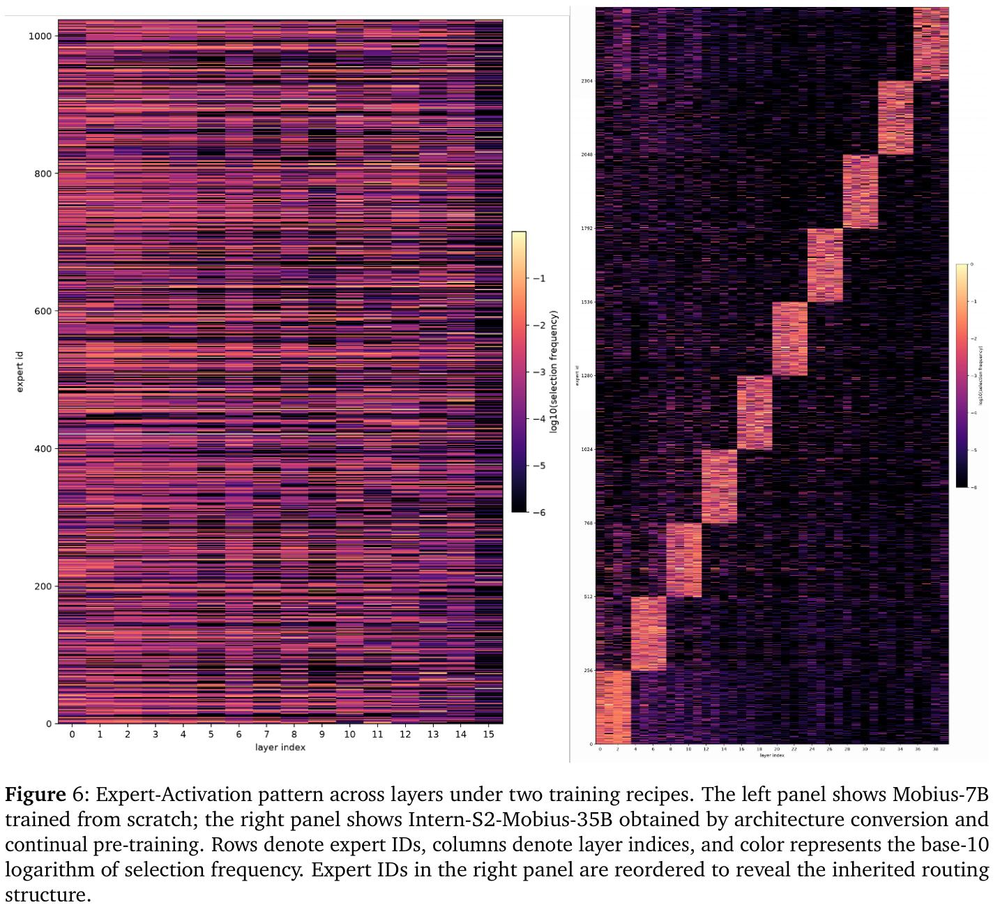
我们使用逐层预测透镜来考察 token 预测如何随潜在计算演化。在相同的 teacher forcing 上下文下，我们解码每层的隐藏状态，获得标准的下一个 token 预测（\(t+1\)），以及其后的四个 MTP 位置（\(t+2\) 至 \(t+5\)）的预测。如图 8 所示，与基线相比，Mobius 在中间层表现出更可解释、与目标更一致的预测。其逐层预测遵循更连贯的语义轨迹，表明与任务相关的信息被集中到紧凑的内部表示中，而非分散在相互竞争的候选 token 中。进一步的潜在迭代逐步细化这一表示，并改善后续位置的预测，最终产生一份全部被接受的五 token 草稿。相比之下，基线的中间预测较不稳定，其草稿在第三个预测位置被拒绝，只留下两个 token 的已接受前缀。这个例子表明，Mobius 可能形成更紧凑的内部表示，并在潜在空间中迭代细化，从而可能有利于多 token 预测。
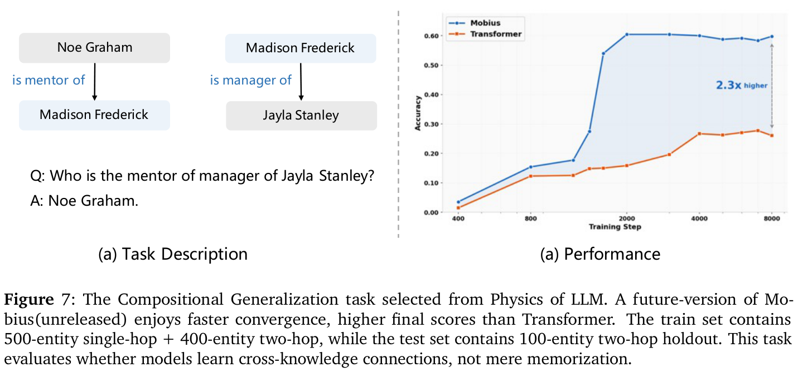
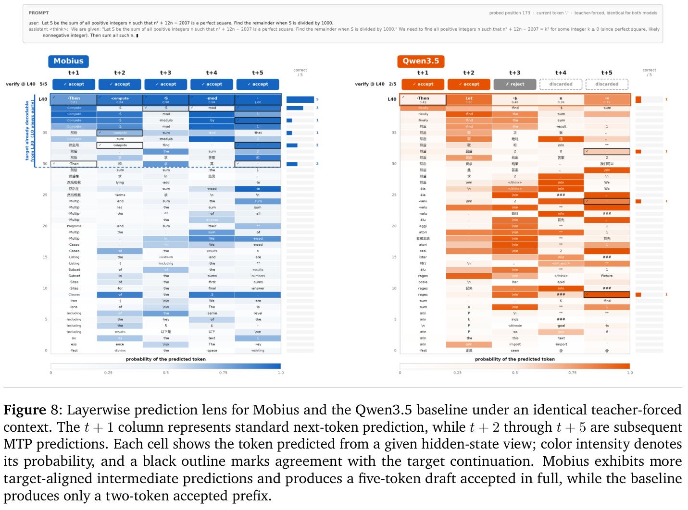
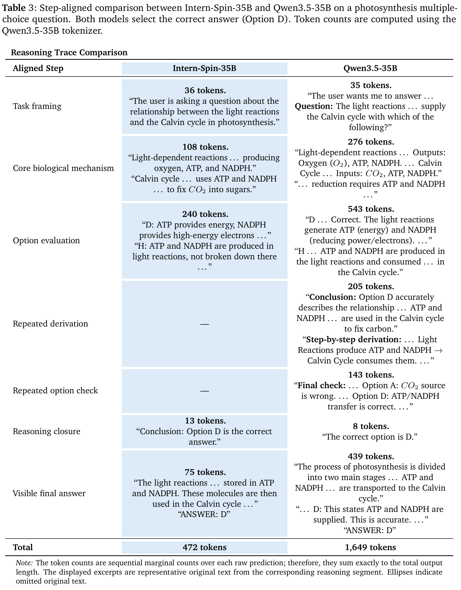
译注：原文表 3 的表注和列标题使用“Intern-Spin-35B”，与正文所用的“Intern-S2-Mobius-35B”不一致。此处保留原表名称。